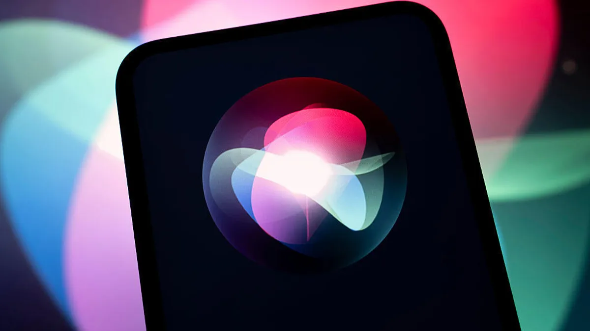

Breaking News
 May 29
May 29
by Casey Quinn
Apple’s upcoming iOS 27 update is expected to introduce a major Siri redesign focused on conversational AI, deeper integration, and stronger competition with ChatGPT.
Apple’s long-awaited Siri overhaul is beginning to come into focus as new renders and reports offer a preview of how the company plans to reinvent its voice assistant in iOS 27. According to reporting highlighted by The Verge, the redesigned Siri represents one of Apple’s most ambitious software projects in years and is expected to play a central role in the company’s broader artificial intelligence strategy. The leaked renders reportedly show a significantly redesigned Siri interface that moves beyond the traditional floating orb users have known for years. Rather, Apple seems to be crafting a more integrated experience, integrating conversational AI capabilities right into the operating system. The redesign is part of Apple’s effort to modernize Siri and better compete with more advanced AI assistants such as ChatGPT and Google Gemini. Reports suggest that Apple is not interested in mere cosmetic changes. Siri is said to be learning to better understand context, which would allow it to keep up with conversations and perform more complex tasks across multiple apps and services. This is a far cry from Siri’s current shortcomings which have often been a point of contention when compared with newer, AI-enabled assistants. According to the reports, Apple views the Siri redesign as a foundational part of its next-generation software strategy. The company is reportedly investing heavily in large language models and conversational AI technologies that could allow Siri to interact more naturally with users while maintaining Apple’s emphasis on privacy and on-device processing. The impending changes are seen as Apple’s most serious effort yet to counter the rapid development of generative AI. Analysts believe the Siri revamp could be one of the flagship features of iOS 27 and a key component in Apple’s future AI environment.
One of the most important elements of the purported revamp is Siri’s user interface overhaul. According to The Verge and Bloomberg’s reporting cited by multiple outlets, Apple is moving toward an interface that feels more conversational and visually integrated with the operating system. The leaked renders suggest Siri will no longer appear as a separate visual element occupying a small portion of the screen. Instead, the assistant may become embedded throughout iOS, creating a more seamless interaction model. Reports indicate users will be able to interact with Siri in a way that resembles talking to a modern AI chatbot rather than a traditional voice-command system. TechCrunch said Apple may be working on an interface that offers more detailed responses, context-aware suggestions and longer conversation threads. It would let users ask follow-up questions naturally without repeating information. This type of feature has become a hallmark of rival AI products such as ChatGPT. The new design also seems to be intended to decrease friction between voice and text interactions. Reports say that users may be able to smoothly switch from speaking to typing while keeping a conversation going. This aligns with industry trends in the wider AI space where multimodal interactions are now the norm. Apple’s refresh is a sign of a growing awareness that users want AI assistants to be more collaborative digital partners rather than just command-response systems. The new interface is reportedly meant to make Siri feel more capable, responsive and intelligent while still being familiar to current Apple users. Industry observers noted that improving Siri’s interface is particularly important because user perception often depends as much on interaction quality as underlying technological capability. Apple appears determined to modernize both aspects simultaneously.
A major theme emerging from the reports is Apple’s intention to compete more directly with leading AI platforms. TechCrunch reported that the redesigned Siri is being positioned as Apple’s answer to the growing popularity of ChatGPT and other generative AI assistants that have rapidly changed consumer expectations. Apple has faced increasing pressure since the launch of ChatGPT and the subsequent AI race involving OpenAI, Google, Anthropic and Microsoft. While Apple introduced Apple Intelligence features in recent years, many observers argued that Siri still lagged behind competitors in conversational ability and reasoning capabilities. The reported iOS 27 overhaul appears designed to address those shortcomings. The sources quoted in the reports said Apple is developing a more advanced conversational engine that can deal with complex requests, maintain context and generate more sophisticated responses. These capabilities would move Siri much closer to the functionality offered by modern large language models. According to TechCrunch, Apple is also exploring ways to make Siri more proactive and useful across daily tasks. Instead of just responding to commands, the assistant could help users organize information, manage workflows and interact more effectively with apps and services throughout the Apple ecosystem. The strategy of the company seems to be to exploit the benefits of its ecosystem instead of just copying rivals. Apple can integrate Siri deeply within iPhones, iPads, Macs and other devices and create experiences that AI chatbots on their own may not readily reproduce. Analysts believe this competitive push is critical because artificial intelligence is increasingly becoming a defining battleground for major technology companies. A successful Siri transformation could help Apple strengthen its position as AI becomes more embedded in consumer technology.
In addition to conversational improvements, reports say Apple is also looking to set Siri apart with more tight integration and a renewed focus on privacy. Engadget pointed out that on-device processing and privacy safeguards remain core pillars of Apple’s AI philosophy. Unlike some competitors who lean on cloud-based processing, Apple has always touted privacy as a major point of differentiation. Rumors indicate the new Siri will still use on-device AI processing when it can, and use secure cloud processing for heavier tasks. The hybrid strategy aims to provide a trade-off between performance and user privacy. The overhaul is also expected to integrate Siri more deeply into Apple Intelligence, the company’s broader artificial intelligence framework. Reports suggest Siri could become the central interface through which users access many AI-powered capabilities across Apple’s ecosystem. This would position the assistant as a gateway to features involving productivity, communication, search and device control.
Another important goal appears to be improving app integration. It’s been a rocky road for Siri as far as complex cross-app actions are concerned in the past, but the new system is reportedly aimed at more sophisticated workflows that span multiple apps and services. Such capabilities could make the assistant much more useful in day to day life. The reports suggest that Apple is doing more than just building a better voice assistant. The company appears to be turning Siri into a comprehensive AI layer that sits across its software ecosystem. If the redesign is successful, it could change how users interact with Apple devices and make Siri a more competitive player in the fast-moving world of AI. Although Apple has not officially revealed the finished product, the leaked renders and reports indicate that iOS 27 might be the most significant Siri upgrade since the assistant was launched. The redesign is part of Apple’s wider attempt to reestablish itself in the era of generative artificial intelligence.

Casey Quinn is a U.S. technology reporter covering innovation, digital policy, and emerging trends in the tech industry.